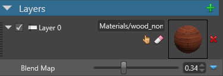

マテリアルマップ
中級 アーティスト プログラマー
マテリアルマップは、マテリアルがどのようにレンダリングされるかの計算に使われます。カラー（RGB）値とスカラー（単精度浮動小数点）値の 2 種類の値を使うことができます。
マテリアルマップは、グロスマップ、ディフューズマップ、ブレンドマップ（マテリアルレイヤーを組み合わせる場合）など、いくつかの用途に使用することができます。
マテリアルマップは、いくつかのプロバイダーのうちのひとつを使って値を取得します。
- 頂点ストリーム（Vertex stream）：メッシュの属性から得られる値。
- 二項演算（Binary operator）: 任意の他の 2 つのプロバイダーの組み合わせ。
- 定数（Float4 / Float）: 固定値。
- 色（Color）: 16 進数の色値。
- シェーダー（Shader）: ComputeColor シェーダから得られる値。これにより、プロシージャルな値を使用することができます。
- テクスチャー（Texture）: テクスチャーからサンプリングされた値。
プロバイダーを選択するには、 （置換）をクリックして、ドロップダウンメニューから選択します。
（置換）をクリックして、ドロップダウンメニューから選択します。

頂点ストリーム（Vertex stream）
このプロバイダーは、マテリアルを適用したモデルのメッシュの属性から値を取得します。
色頂点ストリーム（Color Vertex Stream） と カスタム頂点ストリーム（Custom Vertex Stream） という 2 つのモードがあります。これらを切り替えるには、プロバイダーとして Vertex Stream を選択した状態で  （置換）をクリックし、使用したいモードを選択します。
（置換）をクリックし、使用したいモードを選択します。

色頂点ストリーム（Color vertex stream）
メッシュから色の値を取得します。
| プロパティ | 説明 |
|---|---|
| Index | 名前付きストリームのインデックス |
| Channel | ストリームからサンプリングするチャンネル（RGBA） |
カスタム頂点ストリーム（Custom vertex stream）
指定されたメッシュチャンネルから値を取得します。
| プロパティ | 説明 |
|---|---|
| Name | データを読み出すチャンネルのセマンティック名 |
| Channel | ストリームからサンプリングするチャンネル（RGBA） |
二項演算（Binary operator）
2 つの色値／スカラー値プロバイダーから値を取得して、二項演算を実行します。二項演算には、必要な数だけマテリアルマップを入れ子にすることができます（さらなる二項演算も含みます）。
演算方法は、 （置換）をクリックして、ドロップダウンメニューから選択します。この操作は、Photoshop でレイヤーを合成するときのオプションに似ています。
（置換）をクリックして、ドロップダウンメニューから選択します。この操作は、Photoshop でレイヤーを合成するときのオプションに似ています。

結果 = Leftの色 <演算子> Rightの色

| プロパティ | 説明 |
|---|---|
| Operator | 二項演算子（add, multiply, など） |
| Left | 二項演算の左項となる色／スカラー |
| Right | 二項演算の右項となる色／スカラー |
定数（Float4 / Float）
マテリアル全体に適用する定数値を直接指定します。
色の場合は、X, Y, Z, W の値（Float4）で RGBA 値を指定します。

スカラー値の場合は、スライダー（Float）で値を指定します。

色（Color）
16 進数で表現される色の値です。色プロバイダーは、RGB 値を使用するマテリアルマップでのみ使用できます。
シェーダー（Shader）
値は、ComputeColor シェーダーから取得されます。これにより、プロシージャルな値を使用することができます。
ComputeColor シェーダーの例については、チュートリアル：パーティクル マテリアルを参照してください。
テクスチャー（Texture）
テクスチャーから、色／スカラーがサンプリングされます。
例えば、次の画像は、テクスチャーによってマテリアルの合成結果がどのように変わるかを示しています。


| プロパティ | 説明 |
|---|---|
| Texture | テクスチャーへの参照。 |
| Channel | スカラー値の抽出に使用されるチャンネル（R, G, B, A）。スカラー型のテクスチャーにのみ有効です。 |
| Texcoord Index | このテクスチャーを使用するメッシュから取得されるテクスチャー座標（u, v）。 |
| Filtering | サンプリング方法（Linear, Point, Anisotropic など) |
| Address Mode U / V |
|
| Scale | (u, v) に適用される拡大縮小率。 |
| Offset | (u, v) に適用されるオフセット。 |